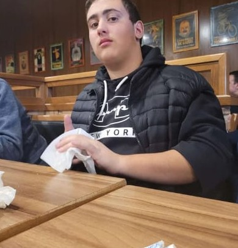

Aquí puedes encontrar quien soy

Me llamo Daniel Salvador Martínez y tengo 18 años.
Nací un 17 de junio del 2007 en un pueblo pequeño de Zaragoza, Tauste
En junio del 2025 terminé el Bachillerato de Ciencias y Tecnología en el IES Río Arba, en Tauste.
Actualmente me encuentro estudiando un grado superior en desarrollo de aplicaciones multiplataforma (DAM) en Prometeo thePower, si todo sale como espero, llevo idea de hacer el grado superior de desarrollo de aplicaciones web (DAW) después de completar los dos cursos de este grado.